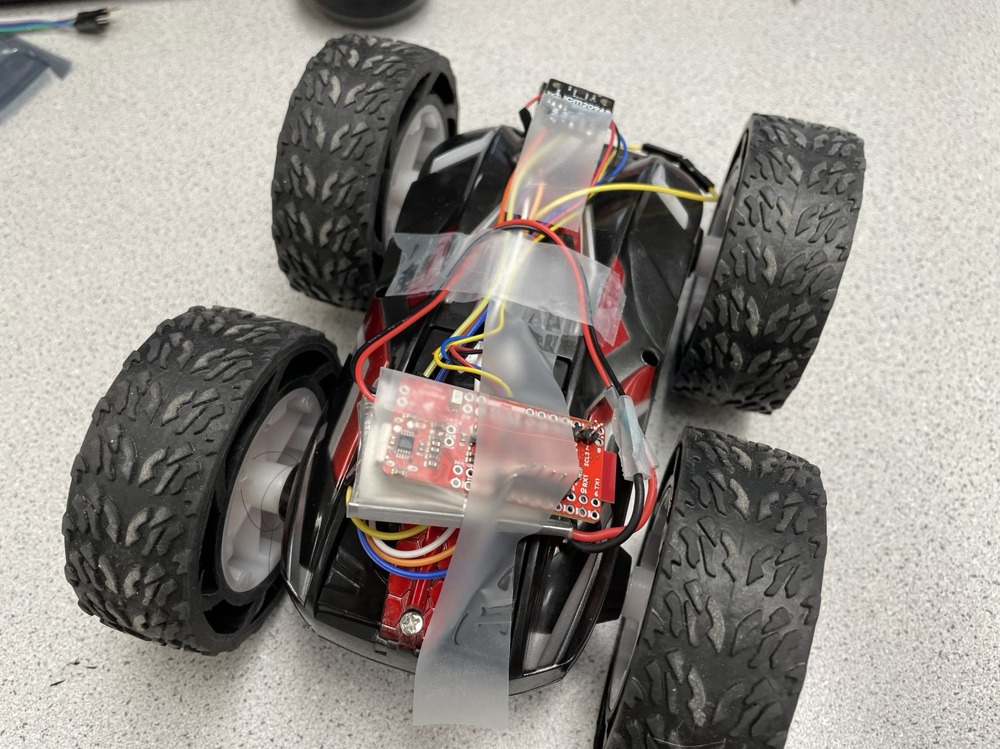
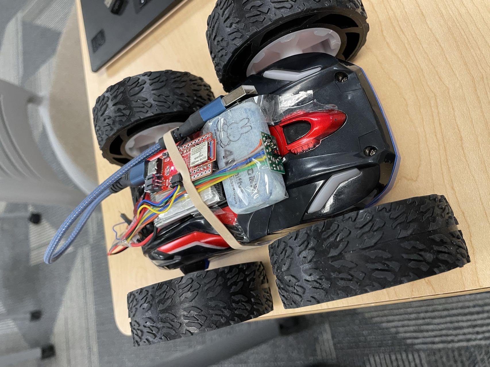

Category A
Basic Information
Length: 18.0cmWedth: 14.5cm
Height: 8.0cm
Weight: 0.5kg
Wheel Radius: 4.4cm
Distance between Two Wheels: 10.0cm
Battery
Chemistry: Li-PolymerCapacity: 850mAh
Output Voltage: 3.7V
Weight: 19g/0.67oz
Size: 43.8*24.6*9.6mm
Battery Life:
The typical life expectancy of the LiPo Battery is less than 300 cycles[1,2]. When people discharge them lower than 3.0V per cell, the battery life time will be shortened. In general, LiPos should be replaced after three to four years.
Category B
Acceleration Range
My car will turn around when I remote control it to go straight, probably because one of the wheels is loose. I would like to express my gratitude to Priyam Patel. He lent me his car so that I could finish this part tests.I taped the battery, Artemis board and the IMU sensor to the roof of the car. The x-axis of the sensor is facing directly in front of the car. Here is the picture.

By making use of the Bluetooth and the notification handler, I was able to get the sensor data continously in my laptop. The Artemis board will send the measured ax every 30ms. To test the acceleration range, I kept pressing the forward button. We can learn from the figure below that the acceleration will not keep increasing all the time. Once it hits a limit, it will drop down so that the speed is in a certain range. The acceleration range is [-2000,2000]mg, that is [-2,2] * 9.8 m/s2 = [-19.6,19.6] m/s2.
Speed Range
I used a ToF sensor to test the speed range. I tied the sensor and a piece of rubber together as shown in the picture, making sure it always faces forward.
At first, I set the Artemis board to get the distance from ToF sensor every 1ms and send it to my laptop, attempting to get more accurate measurements. It turned out the speed was 350m/s, which was impossible! The reason was my interval period was too short. Although the data transmission through Bluetooth is really fast (I tested the interval to be 1ms or even lower, such as 0.001ms in Lab2, and it succeeded), the sensor cannot finish the measurement in 1ms. Timing budget should definitely be taken into account. The manual recommends 20, 33, and 100 ms for short, medium and long distance modes respectively[3]. Therefore, I added a 130ms delay time after every measurement. Here is the result.

Reference
[1]
LiPo Battery Life Expectancy Analysis_Greenway battery.
[2]How long do LiPo batteries last and how do I know if an old battery is safe?
[3] VL53L1X Datasheet.